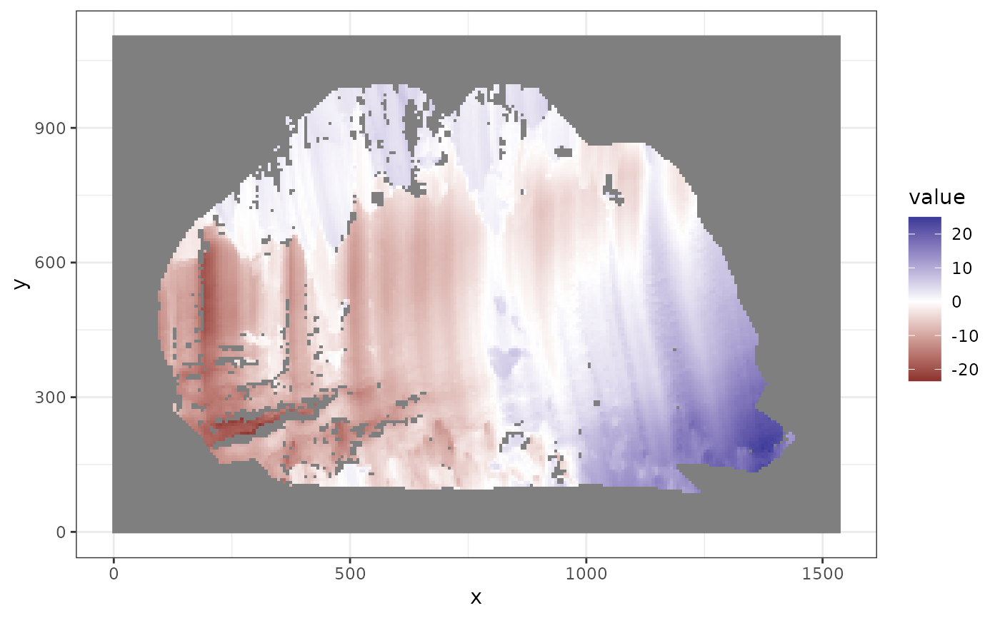
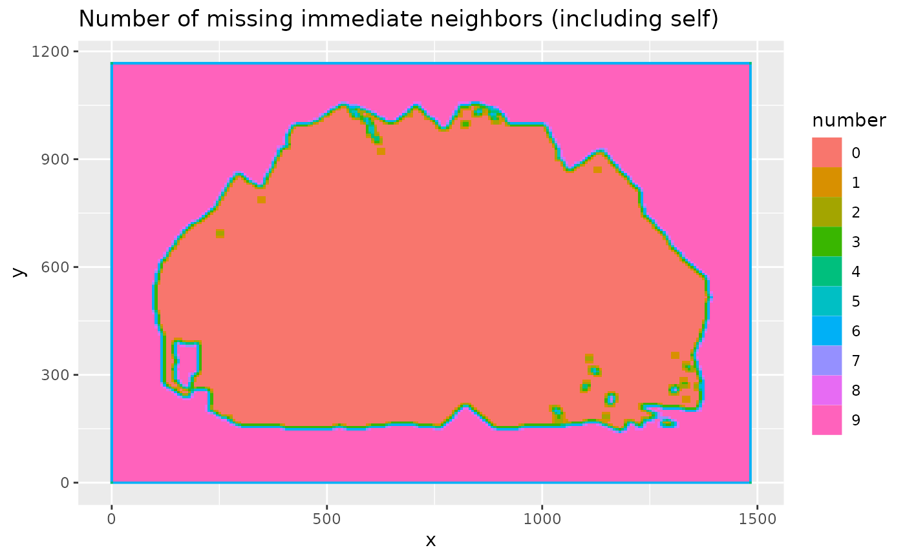
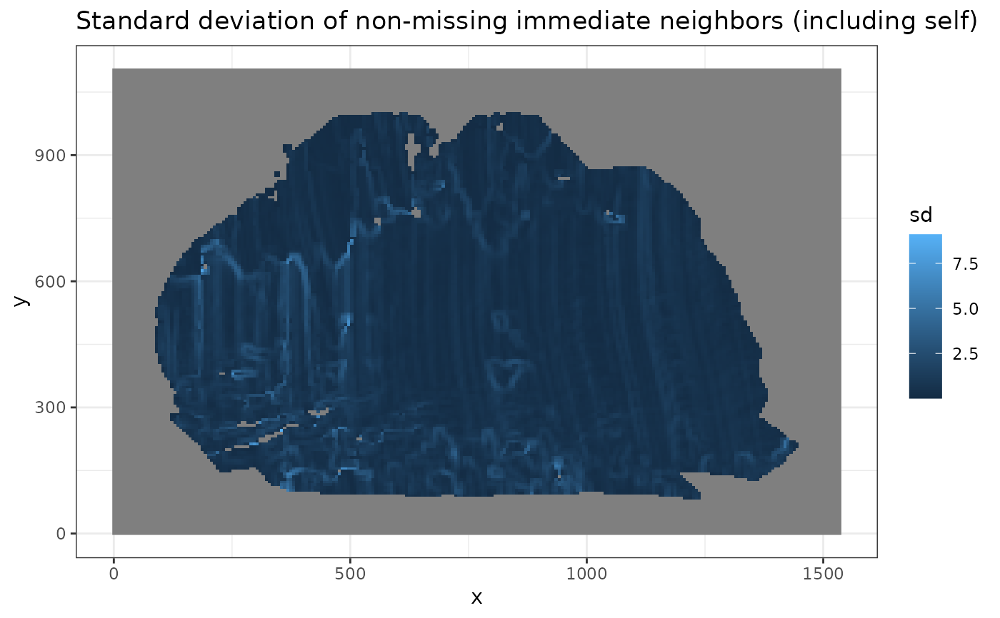
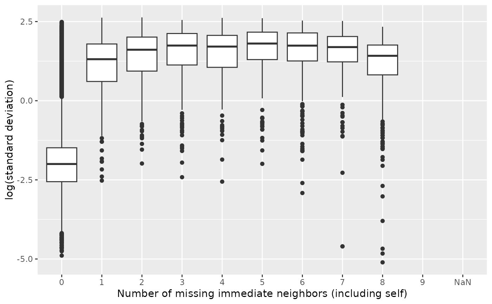

This function generates a summary data frame for the inner polygon of an x3p object.
Arguments
- x3p
An
x3pobject representing a topographic scan.- mask_col
A string representing the color to be used for the polygon.
- concavity
A strictly positive number used in
concaveman::concavemanto influence the shape of the polygon.- b
A positive integer representing the block size for
x3ptools::x3p_average.- ifplot
A Boolean flag indicating whether to save ggplot lists in the output attributes.
Value
A data frame summarizing the inner polygon. The data frame includes the following columns:
x: The
xcoordinates from thex3pobject.y: The
ycoordinates from thex3pobject.value: The height values from the
x3pobject.mask: The mask values from the
x3pobject.n_neighbor_val_miss: The number of immediate neighbors, including the point itself, that are missing.
sd_not_miss: The standard deviation of the immediate neighbors that are not missing.
Examples
x3p <- x3p_subsamples[[1]]
insidepoly_df <- x3p_insidepoly_df(x3p, mask_col = "#FF0000", concavity = 1.5, b = 1, ifplot = TRUE)
#> Warning: There was 1 warning in `mutate()`.
#> ℹ In argument: `n_discrete = ifelse(...)`.
#> Caused by warning:
#> ! 818 parsing failures.
#> row col expected actual
#> 1 -- a number NaN
#> 2 -- a number NaN
#> 3 -- a number NaN
#> 4 -- a number NaN
#> 5 -- a number NaN
#> ... ... ........ ......
#> See problems(...) for more details.
attr(insidepoly_df, "x3p_plot")

attr(insidepoly_df, "number_of_missing_immediate_neighbors_plot")

attr(insidepoly_df, "standard_deviation_of_non_missing_immediate_neighbors_plot")

attr(insidepoly_df, "number_of_missing_immediate_neighbors_boxplot")
#> Warning: Removed 29548 rows containing non-finite outside the scale range
#> (`stat_boxplot()`).
